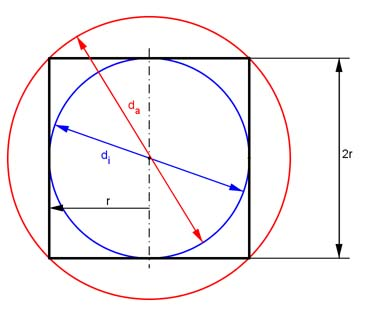
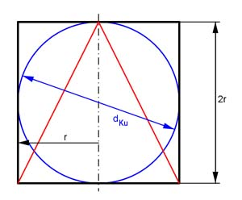
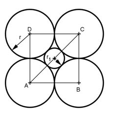

Wie löse ich Matheaufgaben?
Volumen
Aufgabe 295 Wie groß ist das Volumen V einer Kugel mit einem Durchmesser von 9 cm? V = cm3
Aufgabe 296 Wie groß ist das Volumen V des Mondes mit einem Durchmesser von 3 476 km?
Aufgabe 297 Wie groß ist das Volumen V einer Kugel mit einem Radius von 14 cm? V = cm3
Aufgabe 298 Wie groß ist das Volumen V des Jupiters mit einem Radius von 71 400 km?
Aufgabe 299 Wie groß ist der Radius r einer Kugel mit einem Volumen von 216 cm3? r = cm
Aufgabe 300 Wie groß ist der Radius r einer Kugel mit einem Volumen von 45 l?
Aufgabe 301 Wie groß ist die Masse m einer Kugel für den Kugelstoßwettbewerb von männlichen Jugendlichen, wenn ihr Durchmesser 10,7 cm und ihre Dichte 7,86 g/cm3 beträgt? m = kg
Aufgabe 302 Wie groß ist der Durchmesser d einer Kugel für den Kugelstoßwettbewerb von Männern, wenn ihre Masse 7,26 kg und ihre Dichte 7,86 g/cm3 beträgt?
Aufgabe 303 Eine Kugel hat einen Radius von 3 cm. Welchen Radius r hat eine Kugel mit dem achtfachen Volumen? r = cm
Aufgabe 304 Wie groß ist die Oberfläche O einer Kugel mit einem Radius von 4 cm?
Aufgabe 305 Wie groß ist die Oberfläche O einer Kugel mit einem Durchmesser von 7 cm? O = cm2
Aufgabe 306 Wie groß ist der Radius r einer Kugel mit einer Oberfläche von 1 357 dm2?
Aufgabe 307 Wie groß ist die Oberfläche O des Mars, wenn er einen Durchmesser von 6 800 km hat? O = * 108 km2
Aufgabe 308 Eine Hohlkugel hat einen Innendurchmesser von 18 cm und einen außen von 22 cm. Wie groß sind ihr Volumen V und ihre Oberfläche O?
Aufgabe 309 Aus einem Zylinder mit einem Durchmesser von 16 cm und einer Höhe von 21 cm sind an beiden Enden Halbkugeln ausgefräst worden. Wie groß sind sein Volumen V und seine Oberfläche O? O = cm2
Aufgabe 310 An einem Zylinder mit einem Durchmesser von 12 cm und einer Höhe von 18 cm werden an beiden Enden Halbkugeln aufgesetzt. Wie groß sind sein Volumen V und seine Oberfläche O?
Aufgabe 311 Auf einen Kegel mit einem Grundkreisdurchmesser von 26 cm und einer Mantellinie von 30 cm ist eine Halbkugel aufgesetzt. Wie groß sind das Volumen V und die Oberfläche O des Körpers? V = cm3
Aufgabe 312 Eine Kugel hat eine Oberfläche von 18,3 cm2. Wie groß ist ihr Volumen V?
Aufgabe 313 Auf einem Zylinder mit einem Durchmesser von 96 mm und einer Höhe von 38 mm sitzt mittig eine Halbkugel mit einem Durchmesser von 42 mm. Wie groß sind das Volumen V und die Oberfläche O des Körpers? O = cm2
Aufgabe 314 Auf einem Zylinder mit einem Durchmesser von 5 cm und einer Höhe von 6,3 cm sitzen am einen Ende ein 5,9 cm hoher Kegel, am anderen eine Halbkugel mit gleicher Grundfläche wie der Zylinder. Wie groß sind das Volumen V und die Oberfläche O des Körpers?
Aufgabe 315 Auf eine quadratische Pyramide mit einer Seitenlänge von 12 mm und einer Höhe von 9 mm ist mittig auf der Grundfläche eine Halbkugel mit einem Durchmesser von 12 mm aufgesetzt. Wie groß sind das Volumen V und die Oberfläche O des Körpers? O = mm2
Aufgabe 316 An einer Seitenfläche eines Würfels mit einer Seitenlänge von 3 cm ist mittig eine Halbkugel mit einem Durchmesser von 3 cm ausgefräst worden. Wie groß sind das Volumen V und die Oberfläche O des Körpers?
Aufgabe 317 Eine Kugel hat ein Volumen von 1,674 dm3. Wie groß ist ihre Oberfläche O? O = dm2
Aufgabe 318 Eine Kugel hat einen Radius von 5 cm. Welche Höhe h hat ein Kegel mit gleichem Grundkreisradius und Volumen?
Aufgabe 319 Einem Würfel mit der Seitenlänge a ist eine Kugel ein- und eine umbeschrieben. In welchem Verhältnis stehen ihre Volumina und ihre Oberflächen zueinander? Vw : Vi : Va = 1 : 0,523 : dm2
Aufgabe 320 Zylinder mit dem Radius r und der Höhe 2r ist eine Kugel ein- und eine umbeschrieben. In welchem Verhältnis stehen ihre Volumina und ihre Oberflächen zueinander? 
Aufgabe 321 Einem Zylinder mit dem Radius r und der Höhe 2r sind eine Kugel und ein Kegel einbeschrieben. In welchem Verhältnis stehen ihre Volumina zueinander?  Vz : Vku : Vk = 1 : 0,67 :
Aufgabe 322 Eine Kugel mit dem Durchmesser d und ein Würfel mit der Seitenlänge a haben gleiches Volumen. In welchem Verhältnisstehen ihre Oberflächen zueinander?
Aufgabe 323 Eine Kugel mit dem Durchmesser d und ein Würfel mit der Seitenlänge a haben gleiche Oberfläche. In welchem Verhältnis stehen ihre Volumina zueinander? Vw : Vk =
Aufgabe 324 Um wie viel Prozent werden das Volumen und die Oberfläche einer Kugel größer, wenn deren Radius um 10% vergrößert wird?
Aufgabe 325 Um wie viel Prozent werden das Volumen und die Oberfläche einer Kugel kleiner, wenn deren Radius um 10% verkleinert wird? O um %
Aufgabe 326 Die Oberfläche einer Kugel mit dem Radius r1 ist gleich groß wie die eines Zylinders, dessen Achsenschnitt quadratisch mit den Seitenlängen 2r2 ist. In welchem Verhältnis stehen r1 und r2?
Aufgabe 327 Eine Hohlkugel hat ein Volumen von 40 cm3 und eine Wandstärke s von 1 cm. Wie groß sind die Radien ri und ra? ri = cm
Aufgabe 328 Die Radien zweier Kugeln verhalten sich wie 1 : 3. Wie verhalten sich ihre Volumina und ihre Oberflächen zueinander?
Aufgabe 329 Die Radien zweier Kugeln verhalten sich wie 1 : 2, und r2 = 4 cm. Wie groß sind das Volumen V und die Oberfläche O einer dritten Kugel, deren Radius r das arithmetische Mittel der beiden Radien ist? V = cm3
Aufgabe 330 In welchem Verhältnis stehen die Volumina dreier Kugeln, von denen die eine die Seitenflächen, die zweite die Seitenkanten eines Würfels berührt und die dritte dessen Eckpunkte umfasst?
Aufgabe 331 Zwei Kugeln, deren Volumina sich wie 4 : 3 verhalten, berühren sich. Ihr Mittelpunktsabstand beträgt 12 cm. Wie groß ist derDurchmesser d₁ der kleineren Kugel, wie groß das Volumen V2 der größeren? V2 = cm3
Aufgabe 332 Die Radien einer Hohlkugel stehen im Verhältnis ra : ri = m : n. In welchem Verhältnis stehen das Volumen der Hohlkugel zum Volumen der Innenkugel? In welchen Verhältnis stehen ra : ri, wenn das Volumen der Hohlkugel gleich dem Volumen der Innenkugel ist?
Aufgabe 333  8 Kugeln mit dem Radius r = 5,3 cm sind so angeordnet, dass die Verbindung ihrer Mittelpunkte einen Würfel ergibt. Wie groß ist das Volumen V der 6 Kugeln, deren Mittelpunkte auf den Seitendiagonalen des Würfels liegen und die die umliegenden Kugeln berühren? V = cm3 Wie groß ist das Volumen V₁ der Kugel, deren Mittelpunkt der Schnittpunkt der Raumdiagonalen ist und die die umliegenden Kugeln berührt?
Aufgabe 334 Bei einer Kugelzone mit einer Höhe h von 2 cm und einerFläche M von 30 cm² entspricht der große Durchmesser dem Durchmesser der dazugehörigen Kugel. Wie groß ist das Volumen V der zur Zone gehörenden Schicht?
Aufgabe 335 Ein Kugelabschnitt hat eine Fläche von 25 cm2² und eine Höhe von 2 cm. Wie groß ist das Volumen V der dazugehörigen Kugel? V = cm3
Aufgabe 336 Ein Kugelsektor hat ein Volumen von 20 cm3. Der dazugehörigeKugelabschnitt hat eine Fläche von 10 cm2. Wie groß sind die Höhe h des Abschnitts und der Radius r der Kugel?
Aufgabe 337 Wie hoch muss der zu einem Kugelsektor gehörige Abschnitt sein, wenn er die gleiche Fläche wie der dazugehörige Kegelmantel hat und der Kugelradius 15 cm beträgt? h = cm
Aufgabe 338 Eine Kugel hat einen Radius von 5 cm. Wie hoch ist der zu einem Kugelsektor gehörige Abschnitt, wenn das Volumen des Sektors ein Viertel des Kugelvolumens beträgt?
Aufgabe 339 Welches Volumen V hat ein Kugelabschnitt mit einer Fläche von 40 cm2 und einer Höhe von 1 cm? V = cm3